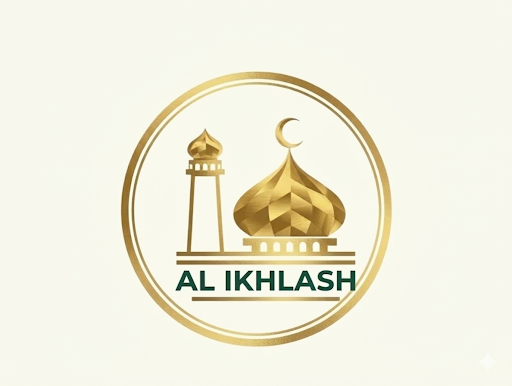
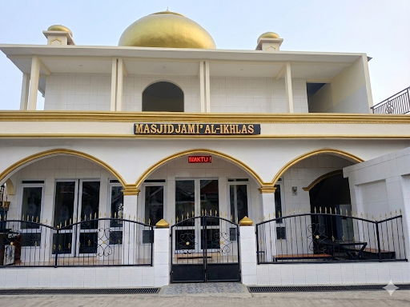

Manajemen Donasi & Infaq Transparan
Kami telah memiliki NPWP resmi, pengelolaan keuangan tersistem lewat Public Financial Dashboard, serta penyaluran rekening aman melalui Bank Syariah Indonesia (BSI).


Sangkanhurip, Katapang, Kabupaten Bandung
Mewujudkan pusat ibadah yang modern, ramah jamaah, dan berbasis keterbukaan informasi publik secara digital.
Jelajahi Layanan DKMKami telah memiliki NPWP resmi, pengelolaan keuangan tersistem lewat Public Financial Dashboard, serta penyaluran rekening aman melalui Bank Syariah Indonesia (BSI).
Gunakan aplikasi mobile banking atau e-wallet Anda untuk melakukan scan QRIS resmi Masjid Al-Ikhlash.

Pelayanan pengurusan jenazah, penyediaan fasilitas ambulans, dan santunan sosial kemaslahatan umat secara full transparan dan responsif.
Pembangunan fisik berkala untuk kenyamanan ruang utama maupun pengembangan lantai 2 masjid.
Pengembangan sistem informasi masjid, rekapitulasi iuran digital, monitor keuangan digital, dan sound system modern.
Ketua DKM
Sekretaris
